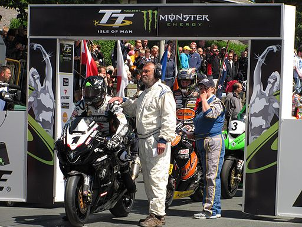
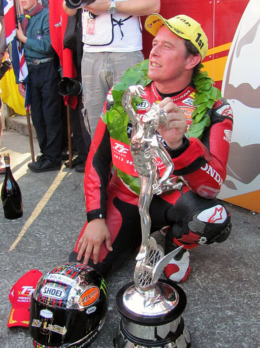

Hoe zit de competitie ineen?
De Isle of Man TT wordt door velen bekeken als het moeilijkste en dodelijkste motorsport evenement ter wereld. Rijders scheuren door de bochten aan record tempo met gemiddelde snelheden boven de 200 km/h. Als coureur kom je hier niet voor het geld, daar is er ook niet veel van. Ze komen naar het eiland tussen Ierland en Engeland voor de moto gekte dat
gedurende twee weken deel van het eiland wordt. De race heeft twee belangrijke attributen waarom ze zo uniek, maar ook gevaarlijk is. Als deelnemer strijdt je tegen andere coureurs om de snelste tijd te behalen, maar dat doe je op je eentje. Alle rijders vertrekken op een tien seconde interval van elkaar en scheuren het parcour af dat 60km lang is voor meerdere rondes aan een stuk.

11thmilestone at English Wikipedia
Annulaties
De race op het eiland van Man is veruit de oudste, nog steeds bestaande motorace ter wereld. Het startte in 1907 en in de 125 jaar dat het al bestaat, zijn de races enkel afgelast tijdens WO1, WO2, 2001 vanwege een voet-en-mondziekte die uitbrak in het verenigd koninkrijk en natuurlijk de corona crisis van 2020 die ook het evenement in 2021 niet liet doorgaan.
Race winnaars
In zijn 125-jarige geschiedenis heeft het eiland al vele winnaars gekend die niet snel vergeten zullen worden. Enkele namen die in recente geschiedenis in de belangstelling zijn gekomen zijn Michael Dunlop, Peter Hickman, Conor Cummins en Ian Hutchinson.

Agljones, CC BY-SA 4.0
Lap records
Het racerecord voor zes rondes staat op de naam van Peter Hickman met een gemiddelde snelheid van 211.95km/h, maar ook het individuele ronde record staat op zijn naam en reedt hij tijdens dezelfde race in 2018 met een gemiddelde snelheid van 217km/h voor één rondje rond het circuit.